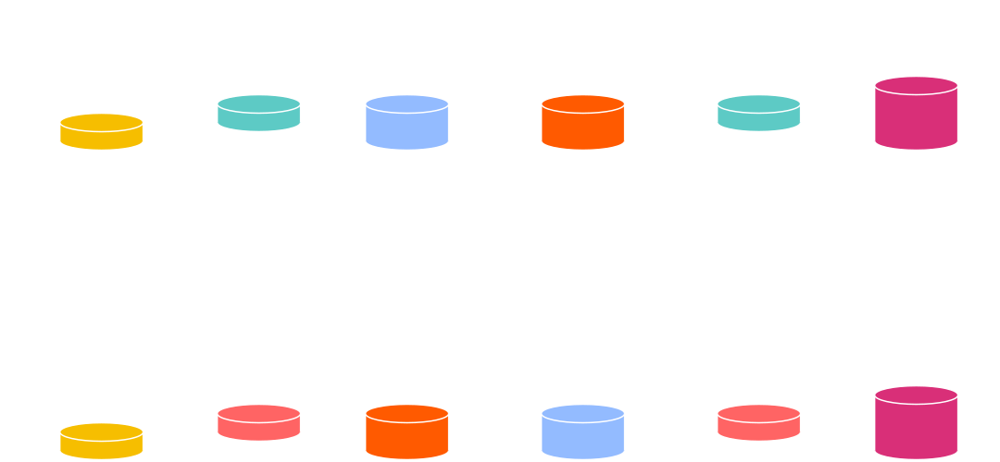

<!DOCTYPE html>
<html lang="en">

<head>
  <meta charset="utf-8" />
  <meta name="viewport" content="width=device-width, initial-scale=1.0, maximum-scale=1.0, user-scalable=no" />

  <title>Encryption</title>
  <link rel="shortcut icon" href="./../../../assets/favicon.ico" />
  <link rel="stylesheet" href="./../../../dist/reset.css" />
  <link rel="stylesheet" href="./../../../dist/reveal.css" />
  <link rel="stylesheet" href="./../../../assets/styles/PBA-theme.css" id="theme" />
  <link rel="stylesheet" href="./../../../css/highlight/shades-of-purple.css" />

  <link rel="stylesheet" href="./../../.././assets/styles/custom-classes.css" />

</head>

<body class="site">
  <header class="site-header">
    <!-- This logo is a link only on the watching server, not the production build -->
      
  </header>
  <main class="reveal">
    <article class="slides">
      <section  data-markdown><script type="text/template">

# Encryption
</script></section><section  data-markdown><script type="text/template">
## Goals for this lesson

<pba-flex center>

- Learn about the differences between symmetric and asymmetric encryption.

</pba-flex>
</script></section><section  data-markdown><script type="text/template">
## Symmetric Cryptography

Symmetric encryption assumes all parties begin with some shared secret information, a potentially very difficult requirement.<br/>The shared secret can then be used to protect further communications from others who do not know this secret.

In essence, it gives a way of _extending_ a shared secret over time.
</script></section><section  data-markdown><script type="text/template">
## Symmetric Encryption


Examples: ChaCha20, Twofish, Serpent, Blowfish, XOR, DES, AES
</script></section><section  data-markdown><script type="text/template">
## Symmetric Encryption

#### _Example: XOR Cipher_

<pba-cols>
<pba-col>

The encryption and decryption functions are identical: applying a bitwise XOR operation with a key.

</pba-col>
<pba-col style="padding-right: 100px">

```text
Plain: 1010  -->Cipher: 0110
Key:   1100  |          1100
       ----  |          ----
       0110--^          1010
```

<aside class="notes"><p>A plaintext can be converted to ciphertext, and vice versa, by applying a bitwise XOR operation with a key known to both parties.</p>
</pba-col>
</pba-cols></aside></script></section><section  data-markdown><script type="text/template">
## Symmetric Encryption

#### ⚠ Warning ⚠

We typically expect symmetric encryption to preserve little about the original plaintext.
We caution however that constructing these protocols remains delicate, even given secure primitives, with two classical examples being unsalted passwords and the [ECB penguin](https://tonybox.net/posts/ecb-penguin/).
</script></section><section  data-markdown><script type="text/template">
### ECB penguin

<pba-cols>
<pba-col>


_Original image_

</pba-col>
<pba-col>


_Encrypted image_

</pba-col>
</pba-cols>

<aside class="notes"><p>Image sources: <a href="https://github.com/robertdavidgraham/ecb-penguin/blob/master/Tux.png">https://github.com/robertdavidgraham/ecb-penguin/blob/master/Tux.png</a> and <a href="https://github.com/robertdavidgraham/ecb-penguin/blob/master/Tux.ecb.png">https://github.com/robertdavidgraham/ecb-penguin/blob/master/Tux.ecb.png</a></p>
</aside></script></section><section  data-markdown><script type="text/template">
## Asymmetric Encryption

- Assumes the sender does not know the recipient's secret "key" 🎉😎
- Sender only knows a special identifier of this secret
- Messages encrypted with the special identifier can only be decrypted with knowledge of the secret.
- Knowledge of this identifier does not imply knowledge of the secret, and thus cannot be used to decrypt messages encrypted with it.
- For this reason, the identifier may be shared publicly and is known as the _public key_.
</script></section><section  data-markdown><script type="text/template">
## Asymmetric Encryption


</script></section><section  data-markdown><script type="text/template">
## Why "Asymmetric"?

_Using only the public key_, information can be transformed ("encrypted") such that only those with knowledge of the secret are able to inverse and regain the original information.

i.e. Public key is used to encrypt but a different, _secret_, key must be used to decrypt.
</script></section><section  data-markdown><script type="text/template">
## Commutative En-/Decryption

In a commutative structure, a message may be encrypted/decrypted<br/>multiple times with potentially multiple keys.

The output does not depend on the order of operations.
</script></section><section  data-markdown><script type="text/template">
## Diffie-Hellman Key Exchange



Mixing Paint Visualization

<aside class="notes"><p>Mixing paint example.
Image Source: <a href="https://upload.wikimedia.org/wikipedia/commons/4/46/Diffie-Hellman_Key_Exchange.svg">https://upload.wikimedia.org/wikipedia/commons/4/46/Diffie-Hellman_Key_Exchange.svg</a></p>
</aside></script></section><section  data-markdown><script type="text/template">
## Commutative En-/Decryption

Encrypting a message with key $A$, and then encrypting the ciphertext with key $B$, would result in the same ciphertext had one encrypted with $B$ and then $A$.

\begin{align}
M &=> E_A(E_B(M)) == E_B(E_A(M)) => C \\\\
C &=> D_A(D_B(C)) == D_B(D_A(C)) \ => M
\end{align}

Elliptic curve cryptography is based on _commutative_ algebraic structures.
</script></section><section  data-markdown><script type="text/template">
<!-- .slide: data-background-color="#4A2439" -->

# Questions
</script></section>
    </article>
  </main>

  <script src="./../../../dist/reveal.js"></script>

  <script src="./../../../plugin/markdown/markdown.js"></script>
  <script src="./../../../plugin/highlight/highlight.js"></script>
  <script src="./../../../plugin/zoom/zoom.js"></script>
  <script src="./../../../plugin/notes/notes.js"></script>
  <script src="./../../../plugin/math/math.js"></script>
  <script>
    function extend() {
      var target = {};
      for (var i = 0; i < arguments.length; i++) {
        var source = arguments[i];
        for (var key in source) {
          if (source.hasOwnProperty(key)) {
            target[key] = source[key];
          }
        }
      }
      return target;
    }

    // default options to init reveal.js
    var defaultOptions = {
      controls: true,
      progress: true,
      history: true,
      center: true,
      transition: 'default', // none/fade/slide/convex/concave/zoom
      slideNumber: true,
      plugins: [
        RevealMarkdown,
        RevealHighlight,
        RevealZoom,
        RevealNotes,
        RevealMath
      ]
    };

    // options from URL query string
    var queryOptions = Reveal().getQueryHash() || {};

    var options = extend(defaultOptions, {"width":1400,"height":900,"margin":0,"minScale":0.2,"maxScale":2,"transition":"none","controls":true,"progress":true,"center":true,"slideNumber":true,"backgroundTransition":"fade"}, queryOptions);
  </script>


  <script>
    Reveal.initialize(options);
  </script>
</body>

</html>
